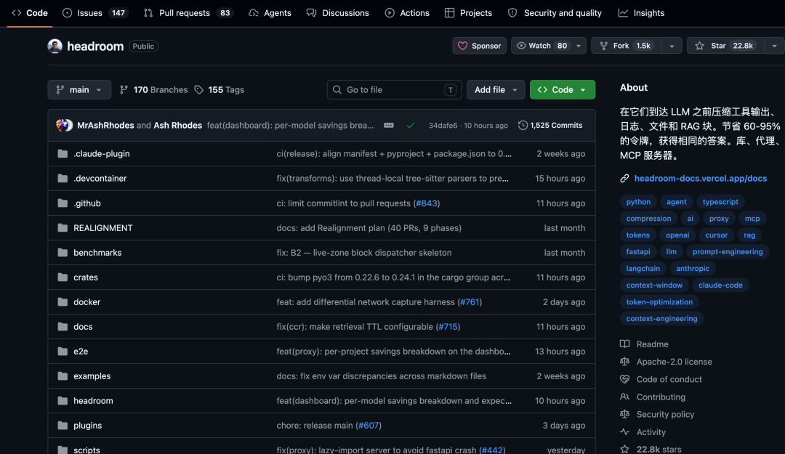
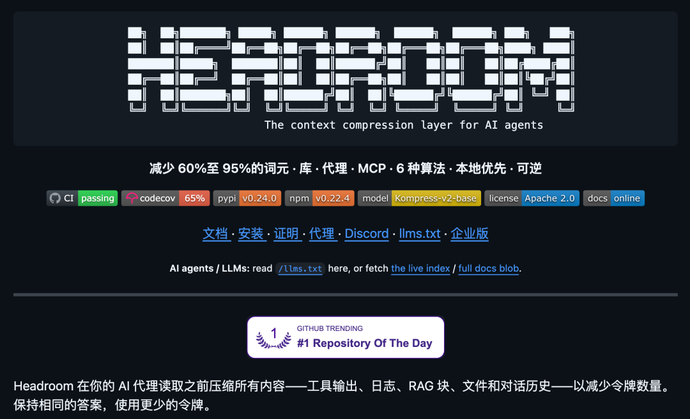
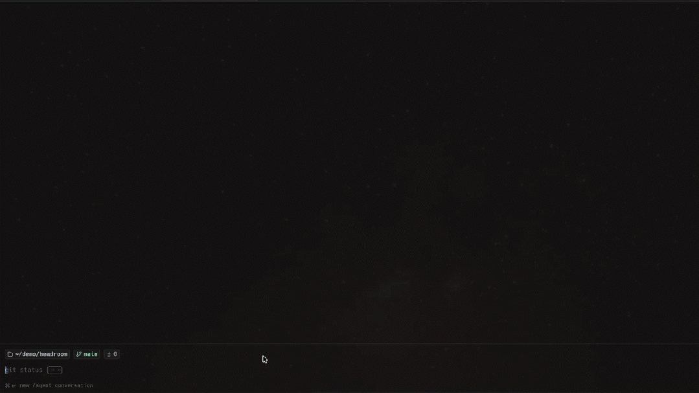
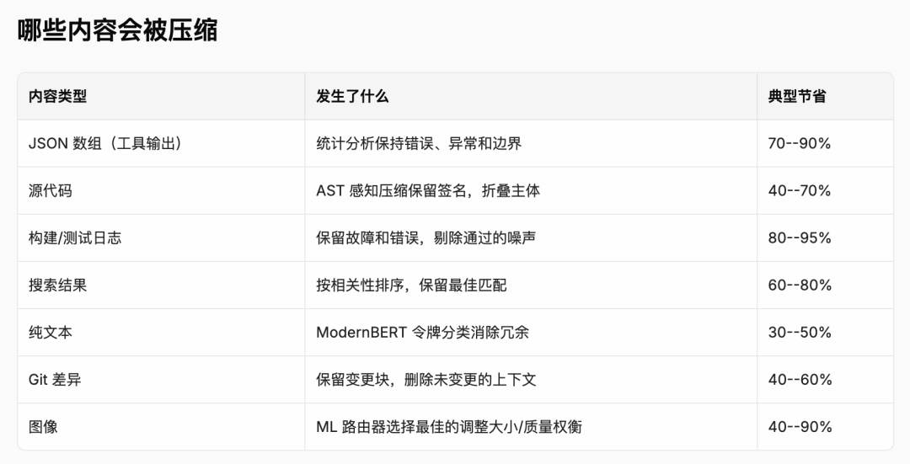
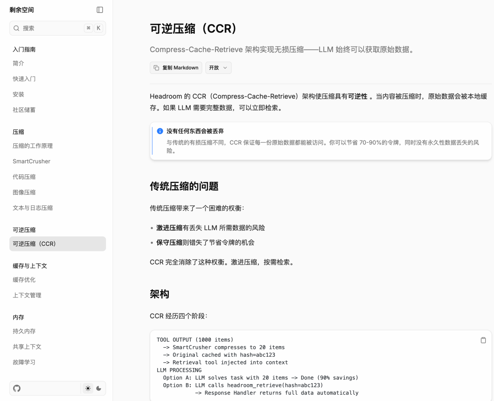
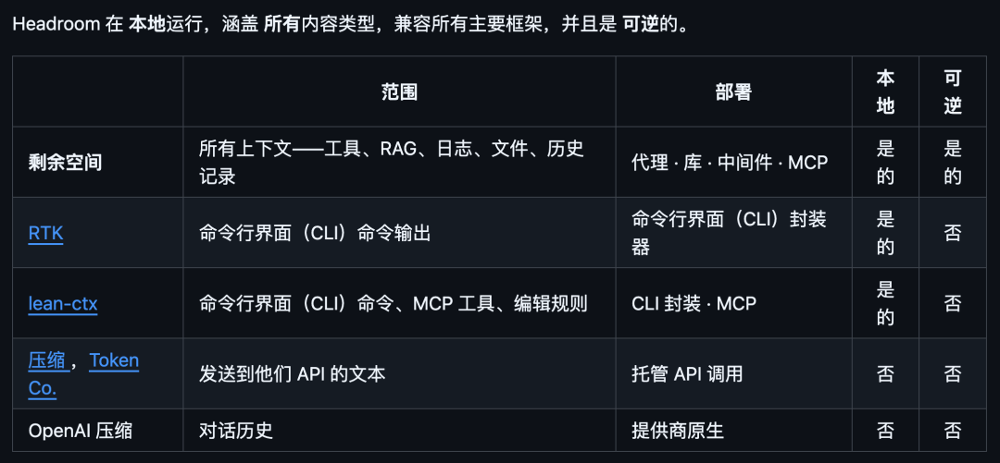
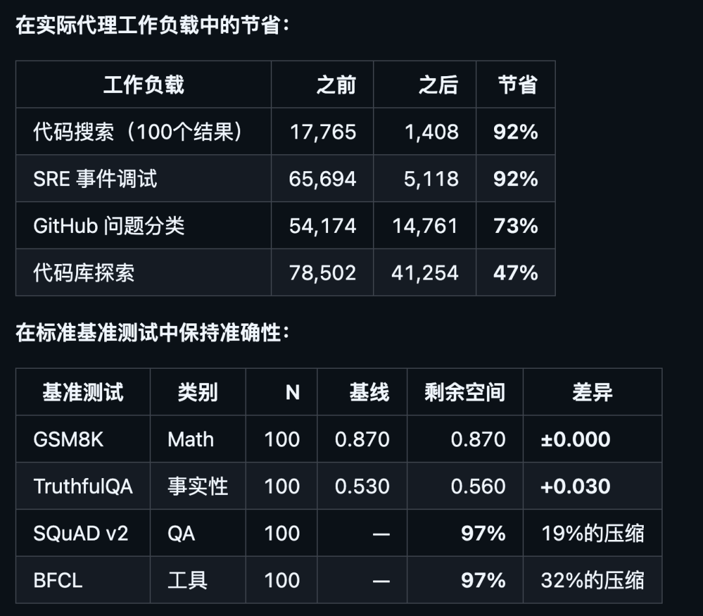
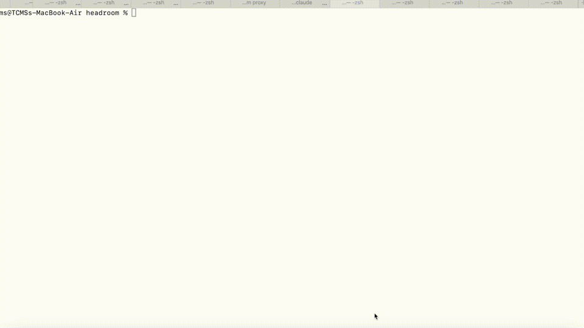

跑 Claude Code 改个稍大的项目，一个长任务下来几万 token 没了。
Codex 调试一段日志，光日志本身就把上下文吃掉一大半。
再赶上月底限流、超额警告，那种感觉就很不爽。
更难受的是，这些 token 大部分都是垃圾信息，一百行 grep 结果里真正有用的就那三行，但模型得全读。
日志里一大坨是无关的 INFO，可你不敢删，怕漏掉关键报错。
刷到一个新项目，叫 Headroom，给 AI agent 装一层上下文压缩层，在所有内容送进 LLM 之前先压一遍。
一段 10144 token 的内容，压完只剩 1260。

01
开源项目简介
Headroom 是一个夹在 AI Agent 和 LLM 之间的中间层。
你平时喂给模型的所有东西，工具输出、命令行结果、代码搜索结果、RAG 检索片段、文件内容、对话历史。
在送进 LLM 之前，Headroom 会先拦下来压一遍。

开源地址：https://github.com/chopratejas/headroom效果基本一样，但是 token 少了一大截。
它有四种接法：
compress(messages) 调用，几行代码就能接入。headroom proxy --port 8787 起一个本地代理，零代码改动，任何 OpenAI 兼容的客户端都能直接套上去。headroom wrap claude | codex | cursor | aider | copilot，主流编程 agent 直接包住，连配置都不用你写。headroom_compress、headroom_retrieve、headroom_stats，Claude Code、Cursor 这些 MCP 原生客户端直接用。无论你是写自己的 AI 应用，还是天天用现成的编程 Agent，都能找到一种最低成本的接法。

02
6 种压缩算法
Headroom 不靠一把锤子敲所有钉子。
很多同类工具就是简单截断、或者用一个小模型统一压缩。
Headroom 会先做内容路由，判断这块东西是 JSON、是代码、是日志、还是自然语言，然后挑对的算法去压。

目前内置了 6 种压缩方案：
比如有一个 SmartCrusher，针对 JSON 的。
工具返回的数组、嵌套对象、混合类型，统计式压缩，README 里提到的数据是 70–90% 节省。
还有一个 CodeCompressor，基于语法树进行代码压缩。
适用于 Python、JS、Go、Rust、Java、C++ ，它的特点是保留 import、函数签名、类型信息，所以模型读压完的代码还能正确理解结构，不会瞎猜。
关于自然语言也可以压缩，作者自己训练了一个 Kompress-v2-base。
这个模型是用大量 agentic trace 训出来的，知道 Agent 场景下哪些话可以丢掉。
03
压了还能找回来
这个是我觉得 Headroom 最关键的设计。
市面上所有压缩方案几乎都有同一个毛病：压完就没了。
信息一旦被截掉、被摘要掉，模型万一发现关键信息丢了，没办法。
Headroom 搞了个叫 CCR 的机制。

原始数据本地存着，永远不删。
压完的精简版送进 LLM，模型如果发现信息不够用，可以直接调 headroom_retrieve 这个工具，把原文按需捞回来。
这是个非常聪明的设计。等于你给模型装了个备忘录：日常对话用压缩版省钱，需要细节的时候再翻回原文。
作者把 Headroom 跟几个同类工具做了张对比表，差距很明显。

四个维度覆盖范围、部署方式、本地化、可逆性，Headroom 是唯一支持的。
04
到底省了多少、准不准
作者在 README 里贴了两组数据。

代码搜索和 SRE 排查这种大量结构化噪声场景效果最猛，Token 直接砍掉 9 成。
代码库探索因为代码本身信息密度高，压缩空间小，但也有近一半。
数学题零掉分，事实问答反而涨了 3 个点（可能是压缩后模型注意力更集中），工具调用保持 97%。
也就是说，省 token 不以牺牲答案质量为代价。
05
跨 Agent 记忆 + 自动学教训
除了压缩，Headroom 还有两个特别实用的功能。
第一个：跨 Agent 共享记忆。
现在大家手上不止一个 agent，Claude Code、Codex 等等，如果每个 Agent 各自学一遍项目背景，token 重复消耗。
Headroom 搞了个本地 SQLite + 向量库的记忆层。
其实就是 Claude、Codex 之间共享同一份记忆，自动去重。Claude 学过的项目结构，Codex 直接拿来用，不用再读一遍。
第二个：headroom learn，让 Agent 自己总结教训。
确实这种自进化的功能最近很多都在搞。
这个功能会扫描你跑失败的会话，分析哪里翻车了、为什么翻车，然后自动约束调整的规则写进 CLAUDE.md 或者 AGENTS.md。
等于 Agent 在帮你维护规则文件，越用越聪明。

06
快速上手
上手其实特别简单，三步：
# 1. 安装pip install "headroom-ai[all]" # Pythonnpm install headroom-ai # Node / TypeScript# 2. 选一种接法headroom wrap claude # 直接包住 Claude Codeheadroom proxy --port 8787 # 起一个本地代理，任何客户端都能套# 或者: from headroom import compress # 写自己的应用时直接调用# 3. 看省了多少headroom perf
要求 Python 3.10+。
如果不想本地装，还有 Docker 镜像：
docker pull ghcr.io/chopratejas/headroom:latest
在 token 还是 AI Coding 主要成本和瓶颈的当下，上下文压缩这件事还挺重要的。
Headroom 把它做成了一个本地、可逆、覆盖全内容类型的完整方案，而且接法灵活。
加上跨 Agent 记忆和自动学教训这两个加分项，特别适合那些 AI Coding Agent 深度用户。
07
点击下方卡片，关注逛逛 GitHub
这个公众号历史发布过很多有趣的开源项目，如果你懒得翻文章一个个找，你直接关注微信公众号：逛逛 GitHub ，后台对话聊天就行了：